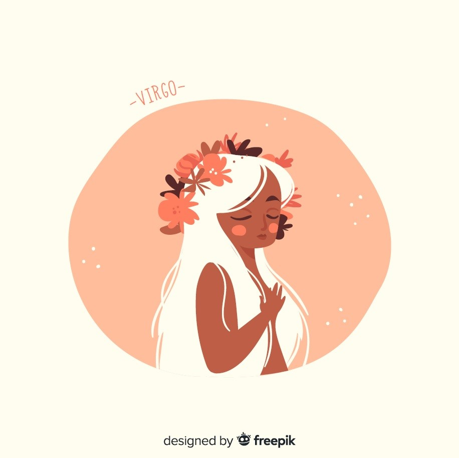

Vierge
(23 août - 22 septembre)
Vous affronterez une situation de crise au sein de la famille. Vous vous reprenez en main et un changement de look serait possible. De plus, il vous ira à ravir. Vous manquerez de patience au bureau, rien de bien catastrophique si ce n’est des retards à gérer ici et là.